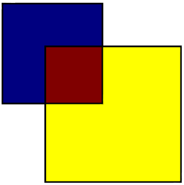

-
Page 15: Top paragraph: "even though they are both one square degree" should be "even though they are both one hundred square degrees."
-
Page 62: In Listing 3.7, the second else condition should be "else (leftEnabled > rightEnabled)" instead of "else (rightEnabled > leftEnabled)".
-
Page 147: The first sentence, "The function u_blendDurationScale is simply precomputed as ..." should read, "The uniform u_blendDurationScale is simply precomputed as ..."
-
Page 166: centereye should be (28728.76, -28740.95, 16334.01, 1.0), not (0.0, 0.0, -800.0, 1.0).
-
Page 170: The last sentence of the first paragraph, "The complete RTC code example is in the CPURelativeToEye class in Chapter05Jitter," should read, "The complete RTE code example is in the CPURelativeToEye class in Chapter05Jitter."
-
Page 430: Figure 13.10 is missing the red square. It should be:

Please email us us with additional errata: authors@virtualglobebook.com.
|